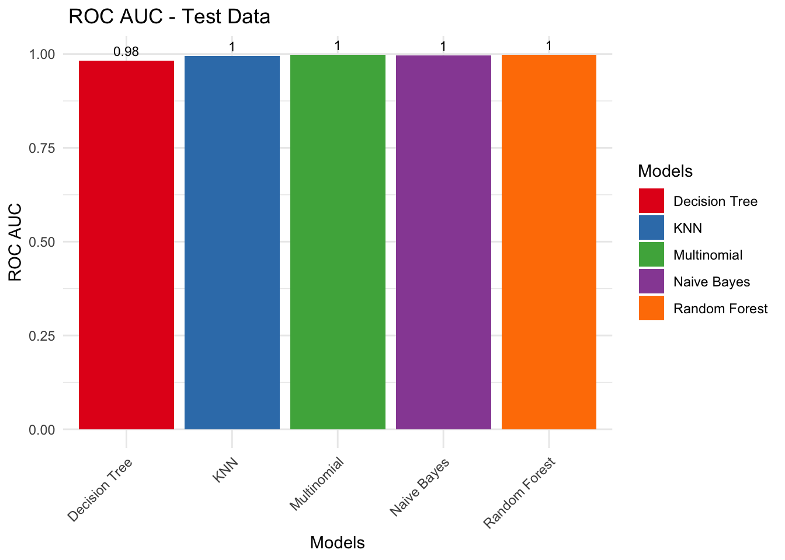

library(nnet) # For multinomial logistic regressionlibrary(dplyr)library(tidyr) # for handling missing values and data tidyinglibrary(naivebayes)
naivebayes 1.0.0 loaded
For more information please visit:
https://majkamichal.github.io/naivebayes/
library(ggplot2)
# Load the datafile_path <-"Insurance_complaints__All_data.csv"insurance_df <-read.csv(file_path, stringsAsFactors =TRUE)# Define all categorical columns and ensure they are factorscategorical_columns <-c("complaint_filed_against", "complaint_filed_by", "reason_complaint_filed","confirmed_complaint", "how_resolved", "complaint_type", "coverage_type","coverage_level", "respondent_role", "respondent_type", "complainant_type", "keywords")insurance_df[categorical_columns] <-lapply(insurance_df[categorical_columns], factor)# Split the data into training and testing sets before any further manipulationset.seed(123)data_split <-initial_split(insurance_df, prop =0.80)train_data <-training(data_split)test_data <-testing(data_split)
#Navies Classification # Define the Naive Bayes model specificationnaive_spec <-naive_Bayes(smoothness =1) %>%set_engine("naivebayes") %>%set_mode("classification")# Create the workflow with the correct response variablenaive_workflow <-workflow() %>%add_model(naive_spec) %>%add_formula(complaint_type ~ .)# Fit the Naive Bayes modelnaive_fit <-fit(naive_workflow, data = train_data)
Warning: naive_bayes(): Feature complaint_filed_against - zero probabilities
are present. Consider Laplace smoothing.
Warning: naive_bayes(): Feature complaint_filed_by - zero probabilities are
present. Consider Laplace smoothing.
Warning: naive_bayes(): Feature reason_complaint_filed - zero probabilities are
present. Consider Laplace smoothing.
Warning: naive_bayes(): Feature how_resolved - zero probabilities are present.
Consider Laplace smoothing.
Warning: naive_bayes(): Feature coverage_type - zero probabilities are present.
Consider Laplace smoothing.
Warning: naive_bayes(): Feature coverage_level - zero probabilities are
present. Consider Laplace smoothing.
Warning: naive_bayes(): Feature others_involved - zero probabilities are
present. Consider Laplace smoothing.
Warning: naive_bayes(): Feature respondent_role - zero probabilities are
present. Consider Laplace smoothing.
Warning: naive_bayes(): Feature respondent_type - zero probabilities are
present. Consider Laplace smoothing.
Warning: naive_bayes(): Feature keywords - zero probabilities are present.
Consider Laplace smoothing.
# Predict on test datanaive_predictions <-predict(naive_fit, new_data = test_data)# Evaluate model performancenaive_results <- naive_predictions %>%bind_cols(test_data) %>%metrics(truth = complaint_type, estimate = .pred_class)# Print the model performance resultsprint(naive_results)
# A tibble: 2 × 3
.metric .estimator .estimate
<chr> <chr> <dbl>
1 accuracy multiclass 0.957
2 kap multiclass 0.939
#Multinomial # Create a recipe for preprocessing the data# Make sure to exclude the response variable from dummy encoding and other manipulationrecipe <-recipe(complaint_type ~ ., data = train_data) %>%step_other(all_nominal_predictors(), threshold =0.02, other ="Other_") %>%step_dummy(all_nominal_predictors(), one_hot =TRUE)# Define the multinomial logistic regression model specificationmultinom_spec <-multinom_reg(mode ="classification") %>%set_engine("nnet", MaxNWts =10000, maxit =200) %>%set_args(trcontrol =trainControl(method ="cv", number =10))# Create the workflow with the recipe and model specificationmultinom_workflow <-workflow() %>%add_recipe(recipe) %>%add_model(multinom_spec)# Fit the multinomial logistic regression modelmultinom_fit <-fit(multinom_workflow, data = train_data)# Predict on test data (apply recipe transformations automatically)multinom_predictions <-predict(multinom_fit, new_data = test_data)# Evaluate model performancemultinom_results <- multinom_predictions %>%bind_cols(test_data) %>%metrics(truth = complaint_type, estimate = .pred_class)# Print the model performance resultsprint(multinom_results)
# A tibble: 2 × 3
.metric .estimator .estimate
<chr> <chr> <dbl>
1 accuracy multiclass 0.977
2 kap multiclass 0.968
# KNN # Create a recipe for preprocessing the datarecipe <-recipe(complaint_type ~ ., data = train_data) %>%step_other(all_nominal_predictors(), threshold =0.02, other ="Other_") %>%step_dummy(all_nominal_predictors(), one_hot =TRUE) %>%step_normalize(all_predictors(), -all_nominal()) # Normalize numeric predictors# Define the KNN model specificationknn_spec <-nearest_neighbor(neighbors =5, weight_func ="rectangular", dist_power =2) %>%set_engine("kknn") %>%set_mode("classification")# Create the workflow with the recipe and model specificationknn_workflow <-workflow() %>%add_recipe(recipe) %>%add_model(knn_spec)# Fit the KNN modelknn_fit <-fit(knn_workflow, data = train_data)# Predict on test data (apply recipe transformations automatically)knn_predictions <-predict(knn_fit, new_data = test_data)# Evaluate model performanceknn_results <- knn_predictions %>%bind_cols(test_data) %>%metrics(truth = complaint_type, estimate = .pred_class)# Print the model performance resultsprint(knn_results)
# A tibble: 2 × 3
.metric .estimator .estimate
<chr> <chr> <dbl>
1 accuracy multiclass 0.985
2 kap multiclass 0.979
#RF# Create a recipe for preprocessing the datarecipe <-recipe(complaint_type ~ ., data = train_data) %>%step_other(all_nominal_predictors(), threshold =0.02, other ="Other_") %>%step_dummy(all_nominal_predictors(), one_hot =TRUE)# Define the Random Forest model specificationrf_spec <-rand_forest(trees =1000, mode ="classification", mtry =2, min_n =10) %>%set_engine("ranger") %>%set_mode("classification")# Create the workflow with the recipe and model specificationrf_workflow <-workflow() %>%add_recipe(recipe) %>%add_model(rf_spec)# Fit the Random Forest modelrf_fit <-fit(rf_workflow, data = train_data)# Predict on test data (apply recipe transformations automatically)rf_predictions <-predict(rf_fit, new_data = test_data)# Evaluate model performancerf_results <- rf_predictions %>%bind_cols(test_data) %>%metrics(truth = complaint_type, estimate = .pred_class)# Print the model performance resultsprint(rf_results)
# A tibble: 2 × 3
.metric .estimator .estimate
<chr> <chr> <dbl>
1 accuracy multiclass 0.970
2 kap multiclass 0.957
# Decision tree# Create a recipe for preprocessing the datarecipe <-recipe(complaint_type ~ ., data = train_data) %>%step_other(all_nominal_predictors(), threshold =0.02, other ="Other_") %>%step_dummy(all_nominal_predictors(), one_hot =TRUE)# Define the Decision Tree model specificationdecision_tree_spec <-decision_tree(tree_depth =5, min_n =10) %>%set_engine("rpart") %>%set_mode("classification")# Create the workflow with the recipe and model specificationdt_workflow <-workflow() %>%add_recipe(recipe) %>%add_model(decision_tree_spec)# Fit the Decision Tree modeldt_fit <-fit(dt_workflow, data = train_data)# Predict on test data (apply recipe transformations automatically)dt_predictions <-predict(dt_fit, new_data = test_data)# Evaluate model performancedt_results <- dt_predictions %>%bind_cols(test_data) %>%metrics(truth = complaint_type, estimate = .pred_class)# Print the model performance resultsprint(dt_results)
# A tibble: 2 × 3
.metric .estimator .estimate
<chr> <chr> <dbl>
1 accuracy multiclass 0.943
2 kap multiclass 0.920
# Ensure you bind the predictions with the actual outcomes before evaluating:naive_predictions <-predict(naive_fit, new_data = test_data, type ="prob")knn_predictions <-predict(knn_fit, new_data = test_data, type ="prob")rf_predictions <-predict(rf_fit, new_data = test_data, type ="prob")multinom_predictions <-predict(multinom_fit, new_data = test_data, type ="prob")dt_predictions <-predict(dt_fit, new_data = test_data, type ="prob")naive_predictions <- naive_predictions %>%bind_cols(test_data[, "complaint_type", drop =FALSE])knn_predictions <- knn_predictions %>%bind_cols(test_data[, "complaint_type", drop =FALSE])rf_predictions <- rf_predictions %>%bind_cols(test_data[, "complaint_type", drop =FALSE])multinom_predictions <- multinom_predictions %>%bind_cols(test_data[, "complaint_type", drop =FALSE])dt_predictions <- dt_predictions %>%bind_cols(test_data[, "complaint_type", drop =FALSE])# Calculate ROC AUC for multiclassnaive_roc_auc <-roc_auc(naive_predictions, truth = complaint_type, ".pred_Independent Review Org", ".pred_Portal", ".pred_Teacher Retirement System", ".pred_Workers Compensation Network")knn_roc_auc <-roc_auc(knn_predictions, truth = complaint_type, ".pred_Independent Review Org", ".pred_Portal", ".pred_Teacher Retirement System", ".pred_Workers Compensation Network")rf_roc_auc <-roc_auc(rf_predictions, truth = complaint_type, ".pred_Independent Review Org", ".pred_Portal", ".pred_Teacher Retirement System", ".pred_Workers Compensation Network")multinom_roc_auc <-roc_auc(multinom_predictions, truth = complaint_type, ".pred_Independent Review Org", ".pred_Portal", ".pred_Teacher Retirement System", ".pred_Workers Compensation Network")dt_roc_auc <-roc_auc(dt_predictions, truth = complaint_type, ".pred_Independent Review Org", ".pred_Portal", ".pred_Teacher Retirement System", ".pred_Workers Compensation Network")# Print the ROC AUC resultprint(naive_roc_auc)
df <-data.frame(Models, roc_auc)ggplot(df, aes(x = Models, y = roc_auc, fill = Models)) +geom_bar(stat ="identity") +geom_text(aes(label =round(roc_auc, 2)), vjust =-0.5, size =3) +# Add text labelslabs(title =" ROC AUC - Test Data ",x ="Models",y ="ROC AUC") +theme_minimal() +theme(axis.text.x =element_text(angle =45, hjust =1)) +scale_fill_brewer(palette ="Set1")

# Define all categorical columns and ensure they are factorscategorical_columns <-c("complaint_filed_against", "complaint_filed_by", "reason_complaint_filed","confirmed_complaint", "how_resolved", "coverage_type","coverage_level", "respondent_role", "respondent_type", "complainant_type", "keywords")insurance_df[categorical_columns] <-lapply(insurance_df[categorical_columns], factor)# Convert the outcome variable to a factorinsurance_df$outcome_variable <-as.factor(insurance_df$complainant_type)# Split the dataset.seed(123)split <-initial_split(insurance_df, prop =0.7)train_data <-training(split)test_data <-testing(split)# Validation splitval_set <-validation_split(train_data, prop =0.8)
Warning: `validation_split()` was deprecated in rsample 1.2.0.
ℹ Please use `initial_validation_split()` instead.
# k-fold cross-validationvfold_set <-vfold_cv(train_data, v =5)# Monte Carlo cross-validationmc_set <-mc_cv(train_data, times =10, prop =0.75)# Bootstrappingbootstrap_set <-bootstraps(train_data, times =10)# Define workflow names and objectsworkflow_names <-c("naive_workflow", "multinom", "rf", "knn", "decision_tree")workflow_objects <-list(naive_workflow, multinom_workflow, rf_workflow, knn_workflow, dt_workflow)# Create a tibble with workflow names and objectsworkflows_tbl <-tibble(work_names = workflow_names, work_objects = workflow_objects)# Fit modelsworkflows_tbl <- workflows_tbl |>rowwise() |>mutate(fits =list(fit(work_objects, train_data)))
Warning: There were 10 warnings in `mutate()`.
The first warning was:
ℹ In argument: `fits = list(fit(work_objects, train_data))`.
ℹ In row 1.
Caused by warning:
! naive_bayes(): Feature complaint_filed_against - zero probabilities are present. Consider Laplace smoothing.
ℹ Run `dplyr::last_dplyr_warnings()` to see the 9 remaining warnings.
# Fit resamples for Monte Carlo setworkflows_val_mc <- workflows_tbl |>mutate(fits =list(fit_resamples(work_objects, mc_set, metrics = delay_metric_set))) |>mutate(metrics =list(collect_metrics(fits)))
→ A | warning: naive_bayes(): Feature complaint_filed_against - zero probabilities are present. Consider Laplace smoothing., naive_bayes(): Feature complaint_filed_by - zero probabilities are present. Consider Laplace smoothing., naive_bayes(): Feature reason_complaint_filed - zero probabilities are present. Consider Laplace smoothing., naive_bayes(): Feature how_resolved - zero probabilities are present. Consider Laplace smoothing., naive_bayes(): Feature coverage_type - zero probabilities are present. Consider Laplace smoothing., naive_bayes(): Feature coverage_level - zero probabilities are present. Consider Laplace smoothing., naive_bayes(): Feature others_involved - zero probabilities are present. Consider Laplace smoothing., naive_bayes(): Feature respondent_role - zero probabilities are present. Consider Laplace smoothing., naive_bayes(): Feature respondent_type - zero probabilities are present. Consider Laplace smoothing., naive_bayes(): Feature keywords - zero probabilities are present. Consider Laplace smoothing.
There were issues with some computations A: x1
There were issues with some computations A: x7
There were issues with some computations A: x10
# Display Monte Carlo validation resultsworkflows_val_mc |>select(c(work_names, metrics)) |>unnest(metrics) |>arrange(desc(mean))